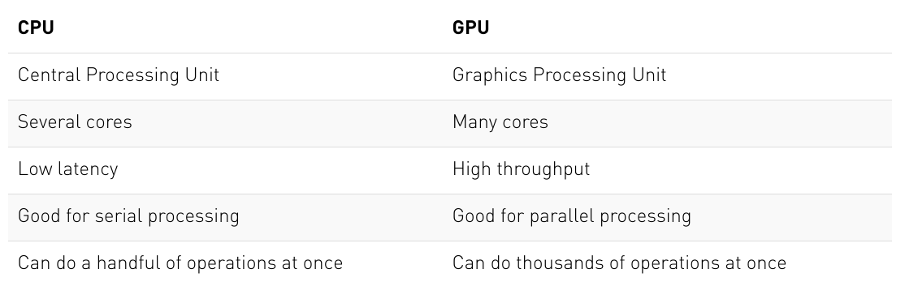

## Standard libraries
import os
import math
import numpy as np
import time
## Imports for plotting
import matplotlib.pyplot as plt
%matplotlib inline
from IPython.display import set_matplotlib_formats
set_matplotlib_formats('svg', 'pdf') # For export
from matplotlib.colors import to_rgba
import seaborn as sns
sns.set()
## Progress bar
from tqdm.notebook import tqdmIntro to PyTorch
Vitaly Vlasov
Lviv University
History
Torch (2002)
A Lua-based framework

PyTorch (2016)
Python impl based on Torch
Lua
Tensors
What is it?
Tensors are the PyTorch equivalent to Numpy arrays, with the addition to also have support for GPU acceleration. A vector is a 1-D tensor, and a matrix a 2-D tensor. When working with neural networks, we use tensors of various shapes and number of dimensions.
Imports
Generic
Set the seed
Tensors
Tensors
Creation
The function torch.Tensor allocates memory for the desired tensor, but reuses any values that have already been in the memory. To directly assign values to the tensor during initialization, there are many alternatives including:
torch.zeros: Creates a tensor filled with zerostorch.ones: Creates a tensor filled with onestorch.rand: Creates a tensor with random values uniformly sampled between 0 and 1torch.randn: Creates a tensor with random values sampled from a normal distribution with mean 0 and variance 1torch.arange: Creates a tensor containing the values \(N,N+1,N+2,...,M\)torch.Tensor(input list): Creates a tensor from the list elements you provide
Tensors
Tensors
# Create a tensor with random values between 0 and 1 with the shape [2, 3, 4]
x = torch.rand(2, 3, 4)
print(x)tensor([[[0.8823, 0.9150, 0.3829, 0.9593],
[0.3904, 0.6009, 0.2566, 0.7936],
[0.9408, 0.1332, 0.9346, 0.5936]],
[[0.8694, 0.5677, 0.7411, 0.4294],
[0.8854, 0.5739, 0.2666, 0.6274],
[0.2696, 0.4414, 0.2969, 0.8317]]])Tensors
Tensors
Note
The conversion of tensors to numpy require the tensor to be on the CPU, and not the GPU. In case you have a tensor on GPU, then: np_arr = tensor.cpu().numpy().
Operations
Addition
Important
Calling x1 + x2 creates a new tensor containing the sum of the two inputs.
Operations
In-place
x1 = torch.rand(2, 3)
x2 = torch.rand(2, 3)
print("X1 (before)", x1)
print("X2 (before)", x2)
x2.add_(x1)
print("X1 (after)", x1)
print("X2 (after)", x2)X1 (before) tensor([[0.5779, 0.9040, 0.5547],
[0.3423, 0.6343, 0.3644]])
X2 (before) tensor([[0.7104, 0.9464, 0.7890],
[0.2814, 0.7886, 0.5895]])
X1 (after) tensor([[0.5779, 0.9040, 0.5547],
[0.3423, 0.6343, 0.3644]])
X2 (after) tensor([[1.2884, 1.8504, 1.3437],
[0.6237, 1.4230, 0.9539]])Operations
Shape change
Another common operation aims at changing the shape of a tensor. A tensor of size (2,3) can be re-organized to any other shape with the same number of elements (e.g. a tensor of size (6), or (3,2), …). In PyTorch, this operation is called view:
You can also swap dimensions:
Operations
Multiplication
Quite often, we have an input vector \(\mathbf{x}\), which is transformed using a learned weight matrix \(\mathbf{W}\). There are multiple ways and functions to perform matrix multiplication:
torch.matmul: Performs the matrix product over two tensors, where the specific behavior depends on the dimensions. If both inputs are matrices (2-dimensional tensors), it performs the standard matrix product. For higher dimensional inputs, the function supports broadcasting (for details see the documentation). Can also be written asa @ b, similar to numpy.torch.mm: Performs the matrix product over two matrices, but doesn’t support broadcasting (see documentation)
Operations
Multiplication
torch.bmm: Performs the matrix product with a support batch dimension. If the first tensor \(T\) is of shape (\(b\times n\times m\)), and the second tensor \(R\) (\(b\times m\times p\)), the output \(O\) is of shape (\(b\times n\times p\)), and has been calculated by performing \(b\) matrix multiplications of the submatrices of \(T\) and \(R\): \(O_i = T_i @ R_i\)torch.einsum: Performs matrix multiplications and more (i.e. sums of products) using the Einstein summation convention. Explanation of the Einstein sum can be found in assignment 1.
Note
Usually, we use torch.matmul or torch.bmm.
Operations
Operations
Indexing
We often have the situation where we need to select a part of a tensor. Indexing works just like in numpy, so let’s try it:
X tensor([[ 0, 1, 2, 3],
[ 4, 5, 6, 7],
[ 8, 9, 10, 11]])Computation
Dynamic computation graph: recap
PyTorch automatically gives us gradients/derivatives of functions that we define.
given an input \(\mathbf{x}\), we define our function by manipulating that input, usually by matrix-multiplications with weight matrices and additions with so-called bias vectors. As we manipulate our input, we are automatically creating a computational graph.
PyTorch is a define-by-run framework; this means that we can just do our manipulations, and PyTorch will keep track of that graph for us.
the only thing we have to do is to compute the output, and then we can ask PyTorch to automatically get the gradients.
Computation
Gradients: enabling
We can change this for an existing tensor using the function requires_grad_() (underscore indicating that this is a in-place operation). Alternatively, when creating a tensor, you can pass the argument requires_grad=True to most initializers we have seen above.
Computation
Computation graph: example
In order to get familiar with the concept of a computation graph, we will create one for the following function:
\[y = \frac{1}{\ell(x)}\sum_i \left[(x_i + 2)^2 + 3\right],\]
where we use \(\ell(x)\) to denote the number of elements in \(x\).
We want to optimize (either maximize or minimize) the output \(y\). For this, we want to obtain the gradients \(\partial y / \partial \mathbf{x}\). For our example, we’ll use \(\mathbf{x}=[0,1,2]\) as our input.
Computation

Computation
Computation graph: example
- Each node of the computation graph has automatically defined a function for calculating the gradients with respect to its inputs,
grad_fn. - This is why the computation graph is usually visualized in the reverse direction (arrows point from the result to the inputs).
Computation
Computation graph: example
We can perform backpropagation on the computation graph by calling the function backward() on the last output, which effectively calculates the gradients for each tensor that has the property requires_grad=True:
x.grad will now contain the gradient \(\partial y/ \partial \mathcal{x}\), and this gradient indicates how a change in \(\mathbf{x}\) will affect output \(y\) given the current input \(\mathbf{x}=[0,1,2]\):
Computation
Computation graph: example
We can also verify these gradients by hand. We will calculate the gradients using the chain rule, in the same way as PyTorch did it:
\[\frac{\partial y}{\partial x_i} = \frac{\partial y}{\partial c_i}\frac{\partial c_i}{\partial b_i}\frac{\partial b_i}{\partial a_i}\frac{\partial a_i}{\partial x_i}\]
Note that we have simplified this equation to index notation, and by using the fact that all operation besides the mean do not combine the elements in the tensor. The partial derivatives are:
\[ \frac{\partial a_i}{\partial x_i} = 1,\hspace{1cm} \frac{\partial b_i}{\partial a_i} = 2\cdot a_i\hspace{1cm} \frac{\partial c_i}{\partial b_i} = 1\hspace{1cm} \frac{\partial y}{\partial c_i} = \frac{1}{3} \]
Hence, with the input being \(\mathbf{x}=[0,1,2]\), our gradients are \(\partial y/\partial \mathbf{x}=[4/3,2,8/3]\). The previous code cell should have printed the same result.
GPU support
GPU overview
A crucial feature of PyTorch is the support of GPUs, short for Graphics Processing Unit.
- A GPU can perform many thousands of small operations in parallel, making it very well suitable for performing large matrix operations in neural networks.
- GPUs can accelerate the training of your network up to a factor of \(100\) which is essential for large neural networks.
- PyTorch implements a lot of functionality for supporting GPUs (mostly those of NVIDIA due to the libraries CUDA and cuDNN).
GPU support
GPU support
GPU
GPU support
Pushing to GPU
By default, all tensors you create are stored on the CPU. We can push a tensor to the GPU by using the function .to(...), or .cuda().
Tip
It is often a good practice to define a device object in your code which points to the GPU if you have one, and otherwise to the CPU. Then, you can write your code with respect to this device object, and it allows you to run the same code on both a CPU-only system, and one with a GPU.
We can specify the device as follows:
GPU support
Note
The zero next to mps indicates that this is the zero-th GPU device on your computer. PyTorch also supports multi-GPU systems, but this you will only need once you have very big networks to train.
GPU support
GPU-to-CPU comparison
x = torch.randn(5000, 5000)
## CPU version
start_time = time.time()
_ = torch.matmul(x, x)
end_time = time.time()
print(f"CPU time: {(end_time - start_time):6.5f}s")
## GPU version
x = x.to(device)
_ = torch.matmul(x, x) # First operation to 'burn in' GPU
# CUDA is asynchronous, so we need to use different timing functions
start = torch.mps.Event(enable_timing=True)
end = torch.mps.Event(enable_timing=True)
start.record()
_ = torch.matmul(x, x)
end.record()
torch.mps.synchronize() # Waits for everything to finish running on the GPU
print(f"GPU time: {0.001 * start.elapsed_time(end):6.5f}s") # Milliseconds to secondsCPU time: 0.19913s
GPU time: 0.05936sGPU support
GPU: seed sync
When generating random numbers, the seed between CPU and GPU is not synchronized.
Hence, we need to set the seed on the GPU separately to ensure a reproducible code.
# GPU operations have a separate seed we also want to set
if torch.mps.is_available():
torch.mps.manual_seed(42)
#torch.mps.manual_seed_all(42)
# Additionally, some operations on a GPU are implemented stochastic for efficiency
# We want to ensure that all operations are deterministic on GPU (if used) for reproducibility
torch.backends.mps.deterministic = True
torch.backends.mps.benchmark = FalseContinuous XOR example
Manual way
If we want to build a neural network in PyTorch, we could specify all our parameters (weight matrices, bias vectors) using Tensors (with requires_grad=True), ask PyTorch to calculate the gradients and then adjust the parameters.
But things can quickly get cumbersome if we have a lot of parameters.
Using torch.nn
In PyTorch, there is a package called torch.nn that makes building neural networks more convenient.
Continuous XOR example
Example description
Given two binary inputs \(x_1\) and \(x_2\), the label to predict is \(1\) if either \(x_1\) or \(x_2\) is \(1\) while the other is \(0\), or the label is \(0\) in all other cases.
The example became famous by the fact that a single neuron, i.e. a linear classifier, cannot learn this simple function.
Continuous XOR example
Model
The package torch.nn defines a series of useful classes like linear networks layers, activation functions, loss functions etc. A full list can be found here.
Functional
Continuous XOR example
nn.Module
In PyTorch, a neural network is built up out of modules. Modules can contain other modules, and a neural network is considered to be a module itself as well. The basic template of a module is as follows:
Note
The forward function is where the computation of the module is taken place, and is executed when you call the module (nn = MyModule(); nn(x)). The backward calculation is done automatically, but could be overwritten as well if wanted.
Continuous XOR example
Simple classifier
We can now make use of the pre-defined modules in the torch.nn package, and define our own small neural network. We will use a minimal network with a input layer, one hidden layer with tanh as activation function, and a output layer.

Continuous XOR example
Simple classifier: Module def
class SimpleClassifier(nn.Module):
def __init__(self, num_inputs, num_hidden, num_outputs):
super().__init__()
# Initialize the modules we need to build the network
self.linear1 = nn.Linear(num_inputs, num_hidden)
self.act_fn = nn.Tanh()
self.linear2 = nn.Linear(num_hidden, num_outputs)
def forward(self, x):
# Perform the calculation of the model to determine the prediction
x = self.linear1(x)
x = self.act_fn(x)
x = self.linear2(x)
return xNote
Note that we do not apply a sigmoid on the output yet. This is because other functions, especially the loss, are more efficient and precise to calculate on the original outputs instead of the sigmoid output.
Continuous XOR example
Simple classifier: Module creation
Continuous XOR example
Simple classifier: Module parameters
The parameters of a module can be obtained by using its parameters() functions, or named_parameters() to get a name to each parameter object. For our small neural network, we have the following parameters:
Continuous XOR example
Simple classifier: Module parameters
- Each linear layer has a weight matrix of the shape
[output, input], and a bias of the shape[output]. - The tanh activation function does not have any parameters.
Note
Parameters are only registered for nn.Module objects that are direct object attributes, i.e. self.a = .... There are alternatives, like nn.ModuleList, nn.ModuleDict and nn.Sequential, that allow you to have different data structures of modules.
Continuous XOR example
Note
The data package defines two classes which are the standard interface for handling data in PyTorch:
data.Dataset: provides an uniform interface to access the training/test datadata.DataLoader: makes sure to efficiently load and stack the data points from the dataset into batches during training.
Continuous XOR example
Dataset class
To define a dataset in PyTorch, we simply specify two functions:
__getitem__: has to return the \(i\)-th data point in the dataset__len__: returns the size of the dataset.
Continuous XOR example
Dataset class
class XORDataset(data.Dataset):
def __init__(self, size, std=0.1):
"""
Inputs:
size - Number of data points we want to generate
std - Standard deviation of the noise (see generate_continuous_xor function)
"""
super().__init__()
self.size = size
self.std = std
self.generate_continuous_xor()
def generate_continuous_xor(self):
# Each data point in the XOR dataset has two variables, x and y, that can be either 0 or 1
# The label is their XOR combination, i.e. 1 if only x or only y is 1 while the other is 0.
# If x=y, the label is 0.
data = torch.randint(low=0, high=2, size=(self.size, 2), dtype=torch.float32)
label = (data.sum(dim=1) == 1).to(torch.long)
# To make it slightly more challenging, we add a bit of gaussian noise to the data points.
data += self.std * torch.randn(data.shape)
self.data = data
self.label = label
def __len__(self):
# Number of data point we have. Alternatively self.data.shape[0], or self.label.shape[0]
return self.size
def __getitem__(self, idx):
# Return the idx-th data point of the dataset
# If we have multiple things to return (data point and label), we can return them as tuple
data_point = self.data[idx]
data_label = self.label[idx]
return data_point, data_labelContinuous XOR example
Continuous XOR example
Dataset visualization
def visualize_samples(data, label):
if isinstance(data, torch.Tensor):
data = data.cpu().numpy()
if isinstance(label, torch.Tensor):
label = label.cpu().numpy()
data_0 = data[label == 0]
data_1 = data[label == 1]
plt.figure(figsize=(4,4))
plt.scatter(data_0[:,0], data_0[:,1], edgecolor="#333", label="Class 0")
plt.scatter(data_1[:,0], data_1[:,1], edgecolor="#333", label="Class 1")
plt.title("Dataset samples")
plt.ylabel(r"$x_2$")
plt.xlabel(r"$x_1$")
plt.legend()Continuous XOR example
The data loader class
The class torch.utils.data.DataLoader represents a Python iterable over a dataset with support for automatic batching, multi-process data loading and many more features. The data loader communicates with the dataset using the function __getitem__, and stacks its outputs as tensors over the first dimension to form a batch. We can configure our data loader with the following input arguments:
batch_size: Number of samples to stack per batchshuffle: If True, the data is returned in a random order. This is important during training for introducing stochasticity.
Continuous XOR example
The data loader class
num_workers: Number of subprocesses to use for data loading. The default, 0, means that the data will be loaded in the main process which can slow down training for datasets where loading a data point takes a considerable amount of time (e.g. large images). More workers are recommended for those, but can cause issues on Windows computers. For tiny datasets as ours, 0 workers are usually faster.pin_memory: If True, the data loader will copy Tensors into CUDA pinned memory before returning them. This can save some time for large data points on GPUs. Usually a good practice to use for a training set, but not necessarily for validation and test to save memory on the GPU.drop_last: If True, the last batch is dropped in case it is smaller than the specified batch size. This occurs when the dataset size is not a multiple of the batch size. Only potentially helpful during training to keep a consistent batch size.
Continuous XOR example
The data loader class
Create:
Fetch some data:
# next(iter(...)) catches the first batch of the data loader
# If shuffle is True, this will return a different batch every time we run this cell
# For iterating over the whole dataset, we can simple use "for batch in data_loader: ..."
data_inputs, data_labels = next(iter(data_loader))
# The shape of the outputs are [batch_size, d_1,...,d_N] where d_1,...,d_N are the
# dimensions of the data point returned from the dataset class
print("Data inputs", data_inputs.shape, "\n", data_inputs)
print("Data labels", data_labels.shape, "\n", data_labels)Data inputs torch.Size([8, 2])
tensor([[-0.0890, 0.8608],
[ 1.0905, -0.0128],
[ 0.7967, 0.2268],
[-0.0688, 0.0371],
[ 0.8732, -0.2240],
[-0.0559, -0.0282],
[ 0.9277, 0.0978],
[ 1.0150, 0.9689]])
Data labels torch.Size([8])
tensor([1, 1, 1, 0, 1, 0, 1, 0])Continuous XOR example
Optimization
After defining the model and the dataset, it is time to prepare the optimization of the model. During training, we will perform the following steps:
- Get a batch from the data loader
- Obtain the predictions from the model for the batch
- Calculate the loss based on the difference between predictions and labels
- Backpropagation: calculate the gradients for every parameter with respect to the loss
- Update the parameters of the model in the direction of the gradients
We have seen how we can do step 1, 2 and 4 in PyTorch. Now, we will look at step 3 and 5.
Continuous XOR example
Loss
We can calculate the loss for a batch by simply performing a few tensor operations as those are automatically added to the computation graph. For instance, for binary classification, we can use Binary Cross Entropy (BCE) which is defined as follows:
\[\mathcal{L}_{BCE} = -\sum_i \left[ y_i \log x_i + (1 - y_i) \log (1 - x_i) \right]\]
where \(y\) are our labels, and \(x\) our predictions, both in the range of \([0,1]\).
Continuous XOR example
Predefined funcs
PyTorch already provides a list of predefined loss functions which we can use (see here for a full list).
For BCE, PyTorch has two modules:
nn.BCELoss(): expects the inputs \(x\) to be in the range \([0,1]\), i.e. the output of a sigmoid,nn.BCEWithLogitsLoss()combines a sigmoid layer and the BCE loss in a single class. This version is numerically more stable than using a plain Sigmoid followed by a BCE loss because of the logarithms applied in the loss function.
Continuous XOR example
Continuous XOR example
Stochastic Gradient Descent
For updating the parameters, PyTorch provides the package torch.optim that has most popular optimizers implemented.
torch.optim.SGD (Stochastic Gradient Descent). Updates parameters by multiplying the gradients with a small constant, called learning rate, and subtracting those from the parameters (hence minimizing the loss).
A good default value of the learning rate for a small network as ours is 0.1.
Continuous XOR example
Optimizer
The optimizer provides two useful functions:
optimizer.step(): updates the parameters based on the gradients as explained above.optimizer.zero_grad(): sets the gradients of all parameters to zero.
Important
zero_grad() is a crucial pre-step before performing backpropagation. If we call the backward function on the loss while the parameter gradients are non-zero from the previous batch, the new gradients would actually be added to the previous ones instead of overwriting them.
Continuous XOR example
Training
Finally, we are ready to train our model. As a first step, we create a slightly larger dataset and specify a data loader with a larger batch size.
Then, push to GPU:
Continuous XOR example
Training
Set model to training mode via model.train() (there is also model.eval()):
def train_model(model, optimizer, data_loader, loss_module, num_epochs=100):
# Set model to train mode
model.train()
# Training loop
for epoch in tqdm(range(num_epochs)):
for data_inputs, data_labels in data_loader:
## Step 1: Move input data to device (only strictly necessary if we use GPU)
data_inputs = data_inputs.to(device)
data_labels = data_labels.to(device)
## Step 2: Run the model on the input data
preds = model(data_inputs)
preds = preds.squeeze(dim=1) # Output is [Batch size, 1], but we want [Batch size]
## Step 3: Calculate the loss
loss = loss_module(preds, data_labels.float())
## Step 4: Perform backpropagation
# Before calculating the gradients, we need to ensure that they are all zero.
# The gradients would not be overwritten, but actually added to the existing ones.
optimizer.zero_grad()
# Perform backpropagation
loss.backward()
## Step 5: Update the parameters
optimizer.step()Continuous XOR example
Continuous XOR example
Training: save a model
After finish training a model, we save the model to disk so that we can load the same weights at a later time. For this, we extract the so-called state_dict from the model which contains all learnable parameters.
OrderedDict({'linear1.weight': tensor([[-2.6034, -3.3292],
[ 1.9774, -2.4076],
[-2.5968, -1.5908],
[-0.5717, -0.8101]], device='mps:0'), 'linear1.bias': tensor([ 1.4459, -1.3992, 2.9882, -0.1375], device='mps:0'), 'linear2.weight': tensor([[-4.4623, 3.0885, 4.4030, -0.1377]], device='mps:0'), 'linear2.bias': tensor([-1.6853], device='mps:0')})To save the state dictionary, we can use torch.save:
Continuous XOR example
Training: load a model
To load a model from a state dict, we use the function torch.load to load the state dict from the disk, and the module function load_state_dict to overwrite our parameters with the new values:
# Load state dict from the disk (make sure it is the same name as above)
state_dict = torch.load("our_model.tar")
# Create a new model and load the state
new_model = SimpleClassifier(num_inputs=2, num_hidden=4, num_outputs=1)
new_model.load_state_dict(state_dict)
# Verify that the parameters are the same
print("Original model\n", model.state_dict())
print("\nLoaded model\n", new_model.state_dict())Original model
OrderedDict({'linear1.weight': tensor([[-2.6034, -3.3292],
[ 1.9774, -2.4076],
[-2.5968, -1.5908],
[-0.5717, -0.8101]], device='mps:0'), 'linear1.bias': tensor([ 1.4459, -1.3992, 2.9882, -0.1375], device='mps:0'), 'linear2.weight': tensor([[-4.4623, 3.0885, 4.4030, -0.1377]], device='mps:0'), 'linear2.bias': tensor([-1.6853], device='mps:0')})
Loaded model
OrderedDict({'linear1.weight': tensor([[-2.6034, -3.3292],
[ 1.9774, -2.4076],
[-2.5968, -1.5908],
[-0.5717, -0.8101]]), 'linear1.bias': tensor([ 1.4459, -1.3992, 2.9882, -0.1375]), 'linear2.weight': tensor([[-4.4623, 3.0885, 4.4030, -0.1377]]), 'linear2.bias': tensor([-1.6853])})Continuous XOR example
Evaluation
Once we have trained a model, it is time to evaluate it on a held-out test set. As our dataset consist of randomly generated data points, we need to first create a test set with a corresponding data loader.
As metric, we will use accuracy which is calculated as follows:
\[acc = \frac{\#\text{correct predictions}}{\#\text{all predictions}} = \frac{TP+TN}{TP+TN+FP+FN}\]
where TP are the true positives, TN true negatives, FP false positives, and FN the fale negatives.
Continuous XOR example
Evaluation
- we don’t need to keep track of the computation graph as we don’t intend to calculate the gradients. In PyTorch this is done via
with torch.no_grad(): .... - remember to additionally set the model to
evalmode.
def eval_model(model, data_loader):
model.eval() # Set model to eval mode
true_preds, num_preds = 0., 0.
with torch.no_grad(): # Deactivate gradients for the following code
for data_inputs, data_labels in data_loader:
# Determine prediction of model on dev set
data_inputs, data_labels = data_inputs.to(device), data_labels.to(device)
preds = model(data_inputs)
preds = preds.squeeze(dim=1)
preds = torch.sigmoid(preds) # Sigmoid to map predictions between 0 and 1
pred_labels = (preds >= 0.5).long() # Binarize predictions to 0 and 1
# Keep records of predictions for the accuracy metric (true_preds=TP+TN, num_preds=TP+TN+FP+FN)
true_preds += (pred_labels == data_labels).sum()
num_preds += data_labels.shape[0]
acc = true_preds / num_preds
print(f"Accuracy of the model: {100.0*acc:4.2f}%")Continuous XOR example

Continuous XOR example
Visualizing classification boundaries
To visualize what our model has learned, we can perform a prediction for every data point in a range of \([-0.5, 1.5]\), and visualize the predicted class (class 0 is blue and class 1 is orange).
@torch.no_grad() # Decorator, same effect as "with torch.no_grad(): ..." over the whole function.
def visualize_classification(model, data, label):
if isinstance(data, torch.Tensor):
data = data.cpu().numpy()
if isinstance(label, torch.Tensor):
label = label.cpu().numpy()
data_0 = data[label == 0]
data_1 = data[label == 1]
fig = plt.figure(figsize=(4,4), dpi=500)
plt.scatter(data_0[:,0], data_0[:,1], edgecolor="#333", label="Class 0")
plt.scatter(data_1[:,0], data_1[:,1], edgecolor="#333", label="Class 1")
plt.title("Dataset samples")
plt.ylabel(r"$x_2$")
plt.xlabel(r"$x_1$")
plt.legend()
# Let's make use of a lot of operations we have learned above
model.to(device)
c0 = torch.Tensor(to_rgba("C0")).to(device)
c1 = torch.Tensor(to_rgba("C1")).to(device)
x1 = torch.arange(-0.5, 1.5, step=0.01, device=device)
x2 = torch.arange(-0.5, 1.5, step=0.01, device=device)
xx1, xx2 = torch.meshgrid(x1, x2, indexing='ij') # Meshgrid function as in numpy
model_inputs = torch.stack([xx1, xx2], dim=-1)
preds = model(model_inputs)
preds = torch.sigmoid(preds)
output_image = (1 - preds) * c0[None,None] + preds * c1[None,None] # Specifying "None" in a dimension creates a new one
output_image = output_image.cpu().numpy() # Convert to numpy array. This only works for tensors on CPU, hence first push to CPU
plt.imshow(output_image, origin='lower', extent=(-0.5, 1.5, -0.5, 1.5))
plt.grid(False)
return fig
_ = visualize_classification(model, dataset.data, dataset.label)
plt.show()Additional features
Tensorboard
TensorBoard is a logging and visualization tool that is a popular choice for training deep learning models.
Additional features
Tensorboard API
- We start the logging process by creating a new object,
writer = SummaryWriter(...), where we specify the directory in which the logging file should be saved - With this object, we can log different aspects of our model by calling functions of the style
writer.add_.... - For example, we can visualize the computation graph with the function
writer.add_graph, or add a scalar value like the loss withwriter.add_scalar.
Additional features
Tensorboard
def train_model_with_logger(model, optimizer, data_loader, loss_module, val_dataset, num_epochs=100, logging_dir='runs/our_experiment'):
# Create TensorBoard logger
writer = SummaryWriter(logging_dir)
model_plotted = False
# Set model to train mode
model.train()
# Training loop
for epoch in tqdm(range(num_epochs)):
epoch_loss = 0.0
for data_inputs, data_labels in data_loader:
## Step 1: Move input data to device (only strictly necessary if we use GPU)
data_inputs = data_inputs.to(device)
data_labels = data_labels.to(device)
# For the very first batch, we visualize the computation graph in TensorBoard
if not model_plotted:
writer.add_graph(model, data_inputs)
model_plotted = True
## Step 2: Run the model on the input data
preds = model(data_inputs)
preds = preds.squeeze(dim=1) # Output is [Batch size, 1], but we want [Batch size]
## Step 3: Calculate the loss
loss = loss_module(preds, data_labels.float())
## Step 4: Perform backpropagation
# Before calculating the gradients, we need to ensure that they are all zero.
# The gradients would not be overwritten, but actually added to the existing ones.
optimizer.zero_grad()
# Perform backpropagation
loss.backward()
## Step 5: Update the parameters
optimizer.step()
## Step 6: Take the running average of the loss
epoch_loss += loss.item()
# Add average loss to TensorBoard
epoch_loss /= len(data_loader)
writer.add_scalar('training_loss',
epoch_loss,
global_step = epoch + 1)
# Visualize prediction and add figure to TensorBoard
# Since matplotlib figures can be slow in rendering, we only do it every 10th epoch
if (epoch + 1) % 10 == 0:
fig = visualize_classification(model, val_dataset.data, val_dataset.label)
writer.add_figure('predictions',
fig,
global_step = epoch + 1)
writer.close()Additional features
Additional features

Activation functions
Activation functions
# Path to the folder where the datasets are/should be downloaded (e.g. MNIST)
DATASET_PATH = "./data"
# Path to the folder where the pretrained models are saved
CHECKPOINT_PATH = "./saved_models/activation_funcs"
# Function for setting the seed
def set_seed(seed):
np.random.seed(seed)
torch.manual_seed(seed)
if torch.mps.is_available(): # GPU operation have separate seed
torch.mps.manual_seed(seed)
#torch.cuda.manual_seed_all(seed)
set_seed(42)import urllib.request
from urllib.error import HTTPError
# Github URL where saved models are stored for this tutorial
base_url = "https://raw.githubusercontent.com/phlippe/saved_models/main/tutorial3/"
# Files to download
pretrained_files = ["FashionMNIST_elu.config", "FashionMNIST_elu.tar",
"FashionMNIST_leakyrelu.config", "FashionMNIST_leakyrelu.tar",
"FashionMNIST_relu.config", "FashionMNIST_relu.tar",
"FashionMNIST_sigmoid.config", "FashionMNIST_sigmoid.tar",
"FashionMNIST_swish.config", "FashionMNIST_swish.tar",
"FashionMNIST_tanh.config", "FashionMNIST_tanh.tar"]
# Create checkpoint path if it doesn't exist yet
os.makedirs(CHECKPOINT_PATH, exist_ok=True)
# For each file, check whether it already exists. If not, try downloading it.
for file_name in pretrained_files:
file_path = os.path.join(CHECKPOINT_PATH, file_name)
if not os.path.isfile(file_path):
file_url = base_url + file_name
print(f"Downloading {file_url}...")
try:
urllib.request.urlretrieve(file_url, file_path)
except HTTPError as e:
print("Something went wrong. Please try to download the file from the GDrive folder, or contact the author with the full output including the following error:\n", e)Activation functions
Activation functions
Basic funcs:
##############################
class Sigmoid(ActivationFunction):
def forward(self, x):
return 1 / (1 + torch.exp(-x))
##############################
class Tanh(ActivationFunction):
def forward(self, x):
x_exp, neg_x_exp = torch.exp(x), torch.exp(-x)
return (x_exp - neg_x_exp) / (x_exp + neg_x_exp)
##############################Activation functions
Activation functions: RELU and friend
##############################
class ReLU(ActivationFunction):
def forward(self, x):
return x * (x > 0).float()
##############################
class LeakyReLU(ActivationFunction):
def __init__(self, alpha=0.1):
super().__init__()
self.config["alpha"] = alpha
def forward(self, x):
return torch.where(x > 0, x, self.config["alpha"] * x)
##############################
class ELU(ActivationFunction):
def forward(self, x):
return torch.where(x > 0, x, torch.exp(x)-1)
##############################
class Swish(ActivationFunction):
def forward(self, x):
return x * torch.sigmoid(x)
##############################Activation functions
Activation functions
Activation functions: visualizing
First, a helper function:
def get_grads(act_fn, x):
"""
Computes the gradients of an activation function at specified positions.
Inputs:
act_fn - An object of the class "ActivationFunction" with an implemented forward pass.
x - 1D input tensor.
Output:
A tensor with the same size of x containing the gradients of act_fn at x.
"""
x = x.clone().requires_grad_() # Mark the input as tensor for which we want to store gradients
out = act_fn(x)
out.sum().backward() # Summing results in an equal gradient flow to each element in x
return x.grad # Accessing the gradients of x by "x.grad"Activation functions
Activation functions: visualizing
def vis_act_fn(act_fn, ax, x):
# Run activation function
y = act_fn(x)
y_grads = get_grads(act_fn, x)
# Push x, y and gradients back to cpu for plotting
x, y, y_grads = x.cpu().numpy(), y.cpu().numpy(), y_grads.cpu().numpy()
## Plotting
ax.plot(x, y, linewidth=2, label="ActFn")
ax.plot(x, y_grads, linewidth=2, label="Gradient")
ax.set_title(act_fn.name)
ax.legend()
ax.set_ylim(-1.5, x.max())
# Add activation functions if wanted
act_fns = [act_fn() for act_fn in act_fn_by_name.values()]
x = torch.linspace(-5, 5, 1000) # Range on which we want to visualize the activation functions
## Plotting
rows = math.ceil(len(act_fns)/2.0)
fig, ax = plt.subplots(rows, 2, figsize=(8, rows*4))
for i, act_fn in enumerate(act_fns):
vis_act_fn(act_fn, ax[divmod(i,2)], x)
fig.subplots_adjust(hspace=0.3)
plt.show()Activation functions
Activation functions: analyzing effect
Model:
class BaseNetwork(nn.Module):
def __init__(self, act_fn, input_size=784, num_classes=10, hidden_sizes=[512, 256, 256, 128]):
"""
Inputs:
act_fn - Object of the activation function that should be used as non-linearity in the network.
input_size - Size of the input images in pixels
num_classes - Number of classes we want to predict
hidden_sizes - A list of integers specifying the hidden layer sizes in the NN
"""
super().__init__()
# Create the network based on the specified hidden sizes
layers = []
layer_sizes = [input_size] + hidden_sizes
for layer_index in range(1, len(layer_sizes)):
layers += [nn.Linear(layer_sizes[layer_index-1], layer_sizes[layer_index]),
act_fn]
layers += [nn.Linear(layer_sizes[-1], num_classes)]
self.layers = nn.Sequential(*layers) # nn.Sequential summarizes a list of modules into a single module, applying them in sequence
# We store all hyperparameters in a dictionary for saving and loading of the model
self.config = {"act_fn": act_fn.config, "input_size": input_size, "num_classes": num_classes, "hidden_sizes": hidden_sizes}
def forward(self, x):
x = x.view(x.size(0), -1) # Reshape images to a flat vector
out = self.layers(x)
return outActivation functions
Activation functions: analyzing effect
Save/load:
import json
def _get_config_file(model_path, model_name):
# Name of the file for storing hyperparameter details
return os.path.join(model_path, model_name + ".config")
def _get_model_file(model_path, model_name):
# Name of the file for storing network parameters
return os.path.join(model_path, model_name + ".tar")
def load_model(model_path, model_name, net=None):
"""
Loads a saved model from disk.
Inputs:
model_path - Path of the checkpoint directory
model_name - Name of the model (str)
net - (Optional) If given, the state dict is loaded into this model. Otherwise, a new model is created.
"""
config_file, model_file = _get_config_file(model_path, model_name), _get_model_file(model_path, model_name)
assert os.path.isfile(config_file), f"Could not find the config file \"{config_file}\". Are you sure this is the correct path and you have your model config stored here?"
assert os.path.isfile(model_file), f"Could not find the model file \"{model_file}\". Are you sure this is the correct path and you have your model stored here?"
with open(config_file, "r") as f:
config_dict = json.load(f)
if net is None:
act_fn_name = config_dict["act_fn"].pop("name").lower()
act_fn = act_fn_by_name[act_fn_name](**config_dict.pop("act_fn"))
net = BaseNetwork(act_fn=act_fn, **config_dict)
net.load_state_dict(torch.load(model_file, map_location=device))
return net
def save_model(model, model_path, model_name):
"""
Given a model, we save the state_dict and hyperparameters.
Inputs:
model - Network object to save parameters from
model_path - Path of the checkpoint directory
model_name - Name of the model (str)
"""
config_dict = model.config
os.makedirs(model_path, exist_ok=True)
config_file, model_file = _get_config_file(model_path, model_name), _get_model_file(model_path, model_name)
with open(config_file, "w") as f:
json.dump(config_dict, f)
torch.save(model.state_dict(), model_file)Activation functions
Activation functions: analyzing effect
Dataset:
import torchvision
from torchvision.datasets import FashionMNIST
from torchvision import transforms
# Transformations applied on each image => first make them a tensor, then normalize them in the range -1 to 1
transform = transforms.Compose([transforms.ToTensor(),
transforms.Normalize((0.5,), (0.5,))])
# Loading the training dataset. We need to split it into a training and validation part
train_dataset = FashionMNIST(root=DATASET_PATH, train=True, transform=transform, download=True)
train_set, val_set = torch.utils.data.random_split(train_dataset, [50000, 10000])
# Loading the test set
test_set = FashionMNIST(root=DATASET_PATH, train=False, transform=transform, download=True)
# We define a set of data loaders that we can use for various purposes later.
# Note that for actually training a model, we will use different data loaders
# with a lower batch size.
train_loader = data.DataLoader(train_set, batch_size=1024, shuffle=True, drop_last=False)
val_loader = data.DataLoader(val_set, batch_size=1024, shuffle=False, drop_last=False)
test_loader = data.DataLoader(test_set, batch_size=1024, shuffle=False, drop_last=False)Activation functions
Activation functions: analyzing effect
Dataset samples:
exmp_imgs = [train_set[i][0] for i in range(16)]
# Organize the images into a grid for nicer visualization
img_grid = torchvision.utils.make_grid(torch.stack(exmp_imgs, dim=0), nrow=4, normalize=True, pad_value=0.5)
img_grid = img_grid.permute(1, 2, 0)
plt.figure(figsize=(8,8))
plt.title("FashionMNIST examples")
plt.imshow(img_grid)
plt.axis('off')
plt.show()
plt.close()Activation functions
Visualizing the gradient flow after initialization
To get a feeling of how every activation function influences the gradients, we can look at a freshly initialized network and measure the gradients for each parameter for a batch of 256 images:
def visualize_gradients(net, color="C0"):
"""
Inputs:
net - Object of class BaseNetwork
color - Color in which we want to visualize the histogram (for easier separation of activation functions)
"""
net.eval()
small_loader = data.DataLoader(train_set, batch_size=256, shuffle=False)
imgs, labels = next(iter(small_loader))
imgs, labels = imgs.to(device), labels.to(device)
# Pass one batch through the network, and calculate the gradients for the weights
net.zero_grad()
preds = net(imgs)
loss = F.cross_entropy(preds, labels)
loss.backward()
# We limit our visualization to the weight parameters and exclude the bias to reduce the number of plots
grads = {name: params.grad.data.view(-1).cpu().clone().numpy() for name, params in net.named_parameters() if "weight" in name}
net.zero_grad()
## Plotting
columns = len(grads)
fig, ax = plt.subplots(1, columns, figsize=(columns*3.5, 2.5))
fig_index = 0
for key in grads:
key_ax = ax[fig_index%columns]
sns.histplot(data=grads[key], bins=30, ax=key_ax, color=color, kde=True)
key_ax.set_title(str(key))
key_ax.set_xlabel("Grad magnitude")
fig_index += 1
fig.suptitle(f"Gradient magnitude distribution for activation function {net.config['act_fn']['name']}", fontsize=14, y=1.05)
fig.subplots_adjust(wspace=0.45)
plt.show()
plt.close()Activation functions
Visualizing the gradient flow after initialization
Result:
# Seaborn prints warnings if histogram has small values. We can ignore them for now
import warnings
warnings.filterwarnings('ignore')
## Create a plot for every activation function
for i, act_fn_name in enumerate(act_fn_by_name):
set_seed(42) # Setting the seed ensures that we have the same weight initialization for each activation function
act_fn = act_fn_by_name[act_fn_name]()
net_actfn = BaseNetwork(act_fn=act_fn).to(device)
visualize_gradients(net_actfn, color=f"C{i}")Activation functions
Training
def train_model(net, model_name, max_epochs=50, patience=7, batch_size=256, overwrite=False):
"""
Train a model on the training set of FashionMNIST
Inputs:
net - Object of BaseNetwork
model_name - (str) Name of the model, used for creating the checkpoint names
max_epochs - Number of epochs we want to (maximally) train for
patience - If the performance on the validation set has not improved for #patience epochs, we stop training early
batch_size - Size of batches used in training
overwrite - Determines how to handle the case when there already exists a checkpoint. If True, it will be overwritten. Otherwise, we skip training.
"""
file_exists = os.path.isfile(_get_model_file(CHECKPOINT_PATH, model_name))
if file_exists and not overwrite:
print("Model file already exists. Skipping training...")
else:
if file_exists:
print("Model file exists, but will be overwritten...")
# Defining optimizer, loss and data loader
optimizer = optim.SGD(net.parameters(), lr=1e-2, momentum=0.9) # Default parameters, feel free to change
loss_module = nn.CrossEntropyLoss()
train_loader_local = data.DataLoader(train_set, batch_size=batch_size, shuffle=True, drop_last=True, pin_memory=True)
val_scores = []
best_val_epoch = -1
for epoch in range(max_epochs):
############
# Training #
############
net.train()
true_preds, count = 0., 0
for imgs, labels in tqdm(train_loader_local, desc=f"Epoch {epoch+1}", leave=False):
imgs, labels = imgs.to(device), labels.to(device) # To GPU
optimizer.zero_grad() # Zero-grad can be placed anywhere before "loss.backward()"
preds = net(imgs)
loss = loss_module(preds, labels)
loss.backward()
optimizer.step()
# Record statistics during training
true_preds += (preds.argmax(dim=-1) == labels).sum()
count += labels.shape[0]
train_acc = true_preds / count
##############
# Validation #
##############
val_acc = test_model(net, val_loader)
val_scores.append(val_acc)
print(f"[Epoch {epoch+1:2d}] Training accuracy: {train_acc*100.0:05.2f}%, Validation accuracy: {val_acc*100.0:05.2f}%")
if len(val_scores) == 1 or val_acc > val_scores[best_val_epoch]:
print("\t (New best performance, saving model...)")
save_model(net, CHECKPOINT_PATH, model_name)
best_val_epoch = epoch
elif best_val_epoch <= epoch - patience:
print(f"Early stopping due to no improvement over the last {patience} epochs")
break
# Plot a curve of the validation accuracy
plt.plot([i for i in range(1,len(val_scores)+1)], val_scores)
plt.xlabel("Epochs")
plt.ylabel("Validation accuracy")
plt.title(f"Validation performance of {model_name}")
plt.show()
plt.close()
load_model(CHECKPOINT_PATH, model_name, net=net)
test_acc = test_model(net, test_loader)
print((f" Test accuracy: {test_acc*100.0:4.2f}% ").center(50, "=")+"\n")
return test_acc
def test_model(net, data_loader):
"""
Test a model on a specified dataset.
Inputs:
net - Trained model of type BaseNetwork
data_loader - DataLoader object of the dataset to test on (validation or test)
"""
net.eval()
true_preds, count = 0., 0
for imgs, labels in data_loader:
imgs, labels = imgs.to(device), labels.to(device)
with torch.no_grad():
preds = net(imgs).argmax(dim=-1)
true_preds += (preds == labels).sum().item()
count += labels.shape[0]
test_acc = true_preds / count
return test_accfor act_fn_name in act_fn_by_name:
print(f"Training BaseNetwork with {act_fn_name} activation...")
set_seed(42)
act_fn = act_fn_by_name[act_fn_name]()
net_actfn = BaseNetwork(act_fn=act_fn).to(device)
train_model(net_actfn, f"FashionMNIST_{act_fn_name}", overwrite=False)Training BaseNetwork with sigmoid activation...
Model file already exists. Skipping training...
============= Test accuracy: 10.00% ==============
Training BaseNetwork with tanh activation...
Model file already exists. Skipping training...
============= Test accuracy: 87.59% ==============
Training BaseNetwork with relu activation...
Model file already exists. Skipping training...
============= Test accuracy: 88.62% ==============
Training BaseNetwork with leakyrelu activation...
Model file already exists. Skipping training...
============= Test accuracy: 88.92% ==============
Training BaseNetwork with elu activation...
Model file already exists. Skipping training...
============= Test accuracy: 87.27% ==============
Training BaseNetwork with swish activation...
Model file already exists. Skipping training...
============= Test accuracy: 88.73% ==============
Activation functions
Visualizing distribution
def visualize_activations(net, color="C0"):
activations = {}
net.eval()
small_loader = data.DataLoader(train_set, batch_size=1024)
imgs, labels = next(iter(small_loader))
with torch.no_grad():
layer_index = 0
imgs = imgs.to(device)
imgs = imgs.view(imgs.size(0), -1)
# We need to manually loop through the layers to save all activations
for layer_index, layer in enumerate(net.layers[:-1]):
imgs = layer(imgs)
activations[layer_index] = imgs.view(-1).cpu().numpy()
## Plotting
columns = 4
rows = math.ceil(len(activations)/columns)
fig, ax = plt.subplots(rows, columns, figsize=(columns*2.7, rows*2.5))
fig_index = 0
for key in activations:
key_ax = ax[fig_index//columns][fig_index%columns]
sns.histplot(data=activations[key], bins=50, ax=key_ax, color=color, kde=True, stat="density")
key_ax.set_title(f"Layer {key} - {net.layers[key].__class__.__name__}")
fig_index += 1
fig.suptitle(f"Activation distribution for activation function {net.config['act_fn']['name']}", fontsize=14)
fig.subplots_adjust(hspace=0.4, wspace=0.4)
plt.show()
plt.close()Activation functions
Dead neurons
One known drawback of the ReLU activation is the occurrence of “dead neurons”, i.e. neurons with no gradient for any training input.
For dead neurons to happen, the output value of a specific neuron of the linear layer before the ReLU has to be negative for all input images.
Activation functions
def measure_number_dead_neurons(net):
# For each neuron, we create a boolean variable initially set to 1. If it has an activation unequals 0 at any time,
# we set this variable to 0. After running through the whole training set, only dead neurons will have a 1.
neurons_dead = [
torch.ones(layer.weight.shape[0], device=device, dtype=torch.bool) for layer in net.layers[:-1] if isinstance(layer, nn.Linear)
] # Same shapes as hidden size in BaseNetwork
net.eval()
with torch.no_grad():
for imgs, labels in tqdm(train_loader, leave=False): # Run through whole training set
layer_index = 0
imgs = imgs.to(device)
imgs = imgs.view(imgs.size(0), -1)
for layer in net.layers[:-1]:
imgs = layer(imgs)
if isinstance(layer, ActivationFunction):
# Are all activations == 0 in the batch, and we did not record the opposite in the last batches?
neurons_dead[layer_index] = torch.logical_and(neurons_dead[layer_index], (imgs == 0).all(dim=0))
layer_index += 1
number_neurons_dead = [t.sum().item() for t in neurons_dead]
print("Number of dead neurons:", number_neurons_dead)
print("In percentage:", ", ".join([f"{(100.0 * num_dead / tens.shape[0]):4.2f}%" for tens, num_dead in zip(neurons_dead, number_neurons_dead)]))set_seed(42)
net_relu = BaseNetwork(act_fn=ReLU(), hidden_sizes=[256, 256, 256, 256, 256, 128, 128, 128, 128, 128]).to(device)
measure_number_dead_neurons(net_relu)Number of dead neurons: [0, 0, 7, 27, 89, 60, 58, 61, 72, 56]
In percentage: 0.00%, 0.00%, 2.73%, 10.55%, 34.77%, 46.88%, 45.31%, 47.66%, 56.25%, 43.75%